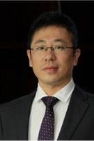
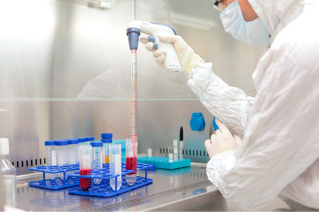

日前，来自杭州的中赢“细胞银行”力携新一代革命性的生命科学技术，以及国际科研专家团队在北京首度亮相。瑞士叫停羊胎素后，中赢细胞银行的NK细胞能否凭借自身先进技术在美容市场杀出一片天地？
随着瑞士叫停羊胎素，有关羊胎素的负面消息席卷而来，甚至有媒体称羊胎素是“天价的谎言”，这让曾经对它深信不疑的爱美人士们心寒不已。然而，中赢细胞银行在北京的高调亮相，似乎重新燃起人们对于美容市场的信心。

中赢细胞银行首席技术执行官王冶陶博士
据日本金泽大学癌研究所肿瘤分子情报学的医学博士，中赢细胞银行首席技术执行官王冶陶介绍，早在30年前，NK细胞就开始应用于临床学了，直到现在，它也常常被用来治疗血液病和恶性肿瘤疾病。NK细胞对有害细胞具有广谱性杀伤的能力，可以有效杀伤、清除有害细胞、衰老细胞、病毒等异物，而不会伤害自身健康的细胞，这是医学界所公认的。它也因此被医学界誉为“人体抵御外界侵害的第一道防线”，在保持机体健康过程中扮演着重要角色。 这是因为NK细胞的广谱性杀伤功能可以有效识别有害细胞，就好像细胞身上都带着一个身份证，而癌细胞的身份证是缺失或者变异的，所以NK细胞可以有效识别这个细胞是否应该被杀伤。这只是其中一种识别方式，而NK细胞对于有害细胞的识别方式还有很多种。而且，它杀伤有害细胞也并非自己单独作战，而是通过活化其他免疫细胞，比如T细胞、树状细胞、B细胞、吞噬巨噬细胞等，甚至是NK细胞自身，和它们共同作战，杀伤体内有害细胞。中赢细胞银行正是利用这样的特性，将NK细胞融入到癌症的预防与抗衰老美容保健当中的。 相反，提到羊胎素，王博士表示他并没有在学术界听到过相关研究，本着严谨的治学态度，他也特意到国内外几个著名的大型论文库里搜索了“sheep placenta”关键词，然而相关论文篇数却依然为零。
中赢生命方舟健康事业部总监彭昉表示，为了让羊胎素的效果更加真实明显，一些不良商家还会在羊胎素中注入另外一些激素，这些激素会对人体起到一个短期效果，但由此产生的副作用却是得不偿失。而中赢细胞银行采用的NK细胞则是完全出自人体自身，不会产生副作用，而且会随着自然代谢被排出体外，人体的免疫系统继续照常工作，也不会因此产生依赖性。

中赢细胞银行专家提取NK细胞
然而，人体内NK细胞的数量却相当稀少，大约只占人体淋巴细胞的15%，而且大部分的NK细胞属于非活化的状态。据王博士介绍，人在18—20岁时，体内NK细胞的数量与质量最高，30岁开始，数量开始明显下降，且下降速度越来越快，40岁以后，NK细胞的活性明显降低，只有高峰时期的1/3左右，而肿瘤病人体内NK细胞的活性可能只有最高峰期的1/10。 王博士说，现在中赢细胞银行通过自己获得国内外双项专利的IL-21跨膜NK细胞体外定向扩增活化技术可以让NK细胞在短期内扩增到万倍以上，纯度达到90%以上，活性及杀伤率提高到80%以上。